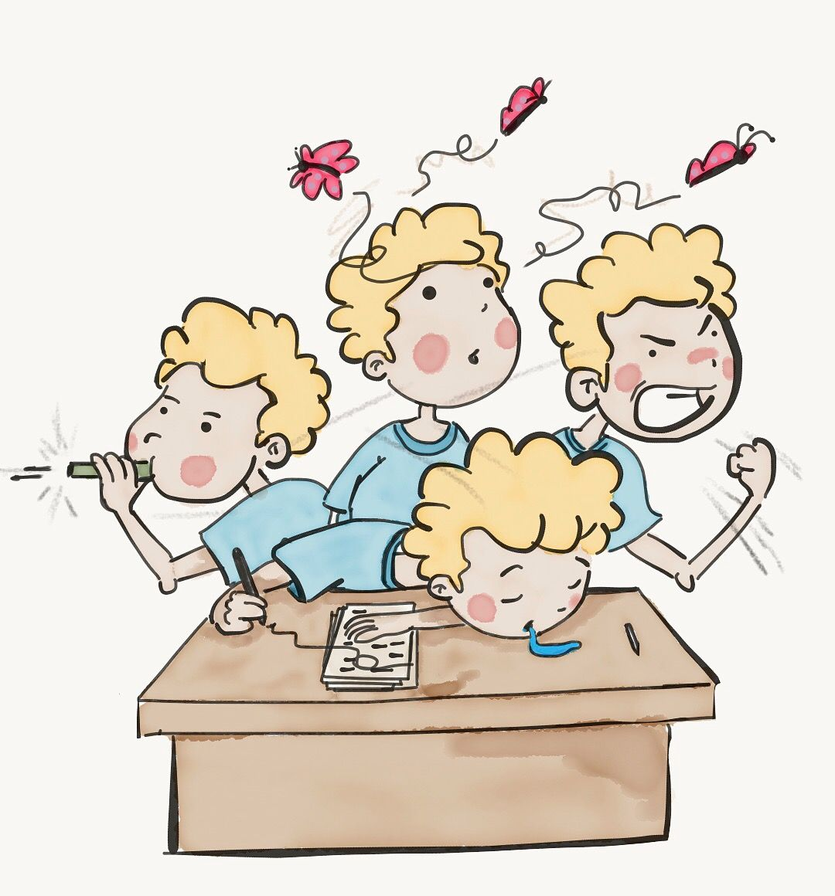
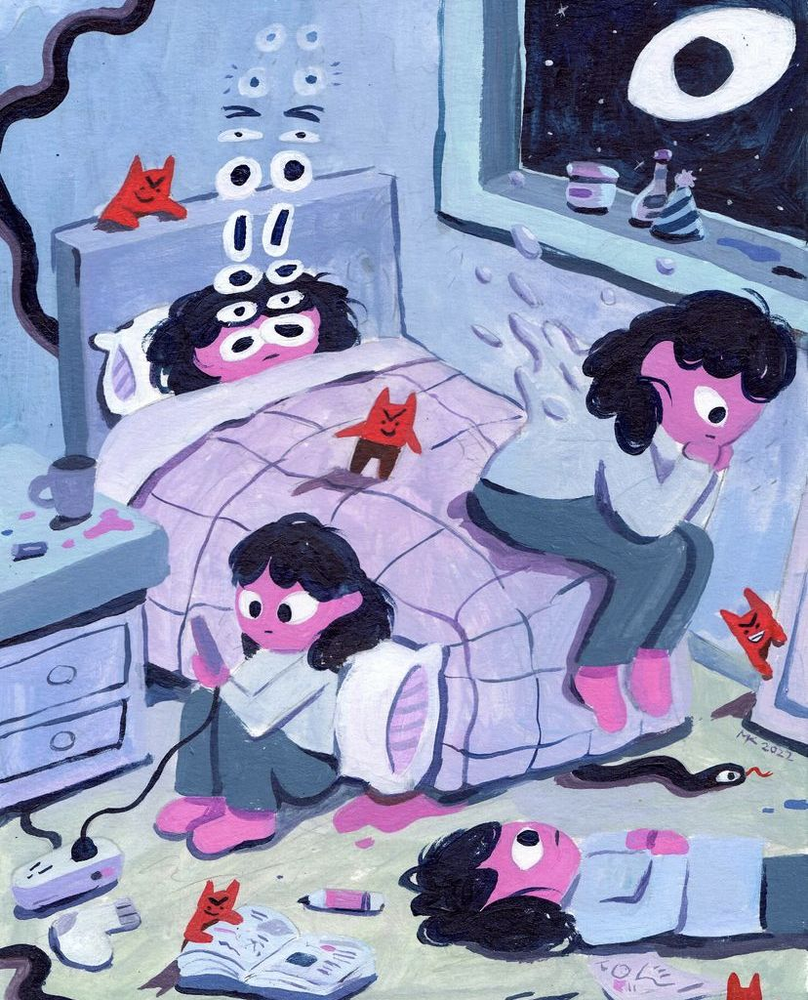
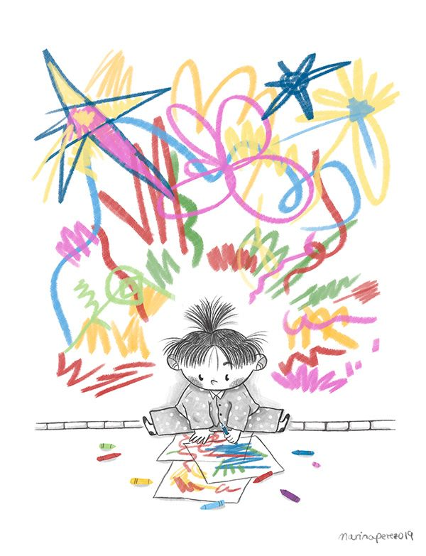
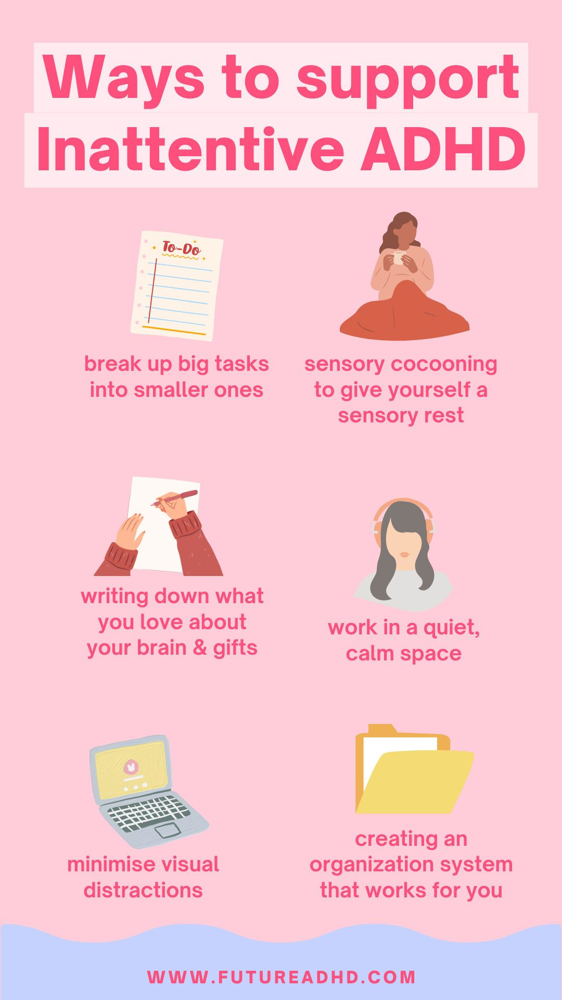
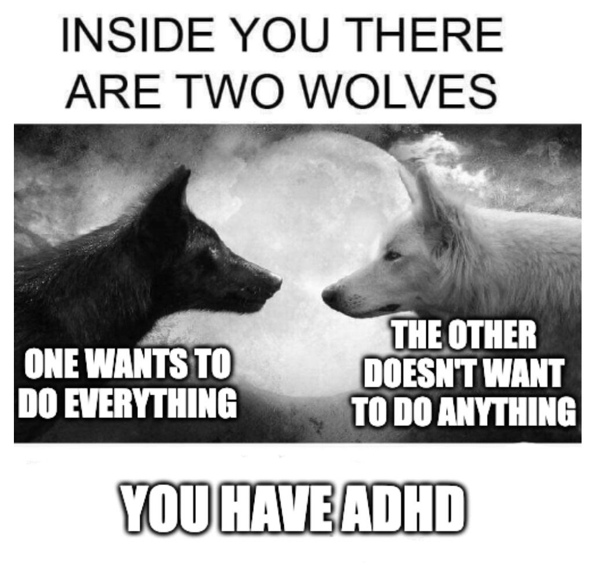
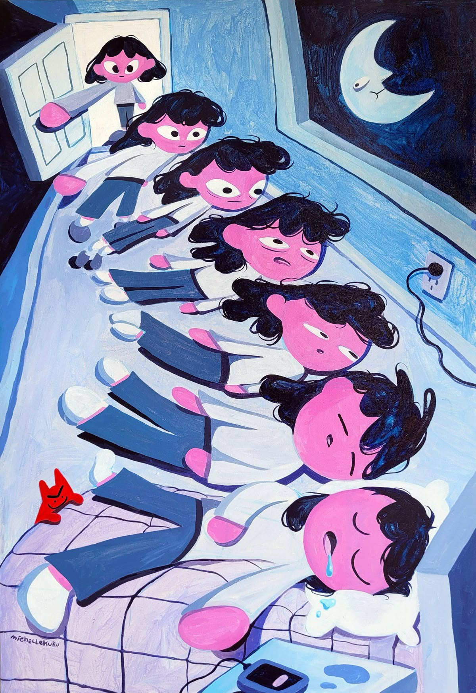
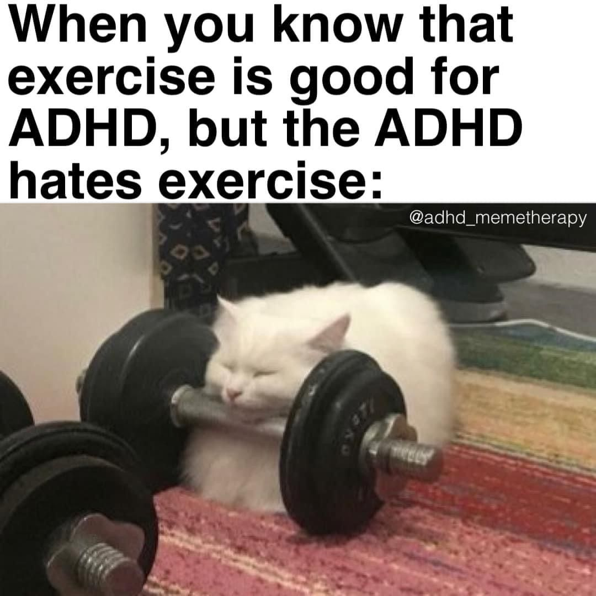
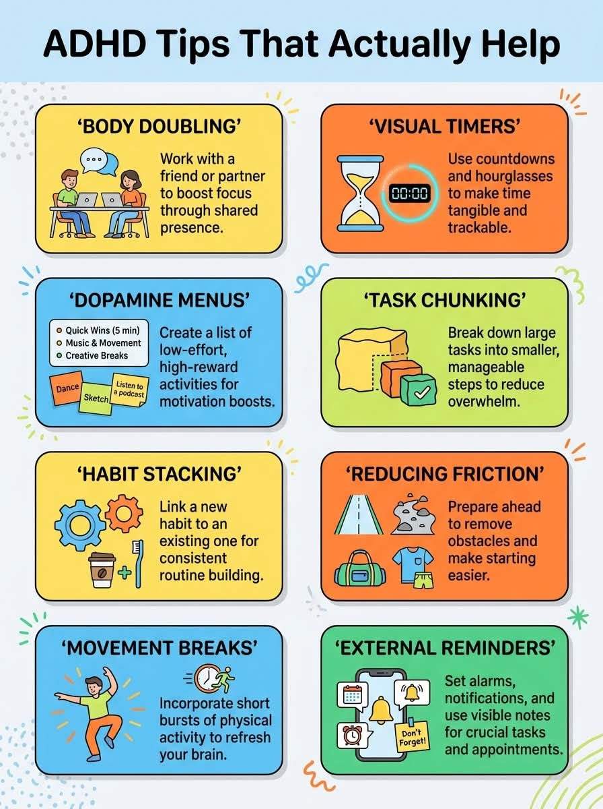
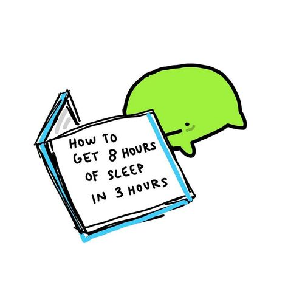

Attention Deficit Hyperactivity Disorder
Attention-Deficit/Hyperactivity Disorder (ADHD) is a neurodevelopmental condition that affects
how a person regulates attention, activity levels, impulses, emotions, and executive functioning
skills such as planning, organization, and time management.
ADHD is not caused by laziness, poor parenting, or a lack of intelligence. It is a medical
condition involving differences in brain development and functioning. ADHD can affect children,
adolescents, and adults, and symptoms may change over time.
People with ADHD often have strengths such as creativity, curiosity, problem-solving abilities,
energy, and the capacity to think outside the box. However, they may also experience challenges
in school, work, relationships, and daily life.
Types of ADHD
ADHD is categorized into three presentations based on the symptoms that are most
prominent:
- Predominantly Inattentive Presentation
- Predominantly Hyperactive-Impulsive Presentation
- Combined Presentation
1. Predominantly Inattentive Presentation
Individuals primarily struggle with attention, focus, organization, and completing tasks.
Common Characteristics
- Frequently loses items
- Easily distracted
- Difficulty following instructions
- Appears forgetful
- Often seems not to be listening
- Often fails to give close attention to details or makes careless mistakes.
- Difficulty sustaining attention in tasks or play activities.
- Does not seem to listen when spoken to directly.
- Fails to follow through on instructions and finish schoolwork or chores.
- Difficulty organizing tasks and activities.
- Avoids tasks requiring sustained mental effort.
- Loses items necessary for tasks or activities.
- Easily distracted by external stimuli.
- Forgetful in daily activities.
- Makes careless mistakes at work or during activities.
- Difficulty sustaining attention in tasks.
- Does not seem to listen when spoken to directly.
- Fails to complete work projects or household responsibilities.
- Difficulty organizing tasks and activities.
- Avoids tasks requiring prolonged mental effort.
- Loses keys, wallets, paperwork, or other important items.
- Easily distracted by external stimuli.
- Forgetful in daily activities.
2. Predominantly Hyperactive-Impulsive Presentation

Individuals primarily struggle with excessive activity levels and impulse control.
Common Characteristics
- Constant movement or fidgeting
- Difficulty sitting still
- Excessive talking
- Interrupting others
- Acting before thinking
- Fidgets with hands or feet or squirms in seat.
- Leaves seat when expected to remain seated.
- Runs about or climbs in inappropriate situations.
- Difficulty engaging in leisure activities quietly.
- Acts as if driven by a motor.
- Talks excessively.
- Blurts out answers before questions are completed.
- Difficulty waiting their turn.
- Interrupts or intrudes on others.
- Fidgets with hands or feet or squirms in seat.
- Leaves seat when remaining seated is expected.
- Feels restless or unable to stay still.
- Difficulty relaxing quietly.
- Feels uncomfortable being inactive for long periods.
- Talks excessively.
- Blurts out answers before questions are completed.
- Difficulty waiting in line or taking turns.
- Interrupts or intrudes on others.
3. Combined Presentation
This is the most common presentation and includes significant symptoms of both inattention and hyperactivity-impulsivity.
Common Characteristics
- Difficulty focusing
- Disorganization
- Impulsive behavior
- Hyperactivity or restlessness
- Challenges with self-regulation
The Internal Experience of ADHD
ADHD is often misunderstood as simply being distracted, hyperactive, or disorganized. However, the internal experience is much more complex. Many people with ADHD are working extremely hard to manage attention, emotions, impulses, and daily responsibilities, even when their efforts are not visible to others.
Attention Is Not a Lack of Focus
People with ADHD do not necessarily have a deficit of attention. Instead, they often have difficulty regulating attention.
- Struggling to focus on tasks that feel boring or repetitive.
- Becoming intensely focused on stimulating activities.
- Having attention shift unexpectedly.
The Constant Noise of Thoughts
- Multiple thoughts occurring simultaneously.
- Songs, conversations, ideas, and reminders competing for attention.
- Difficulty mentally switching off.

Executive Dysfunction
Executive functions help us plan, organize, prioritize, initiate, and complete tasks.
- Planning
- Prioritizing
- Organizing
- Starting tasks
- Monitoring progress
- Completing tasks
Time Blindness
- Underestimating how long tasks will take.
- Losing track of time.
- Difficulty sensing the passage of time.
Emotional Intensity

- Strong emotional reactions.
- Difficulty calming down.
- Sensitivity to criticism or rejection.
Rejection Sensitivity
Some people with ADHD experience intense emotional pain when they perceive criticism, rejection, or exclusion.
Chronic Mental Effort
- Managing appointments
- Completing paperwork
- Following routines
- Staying organized
Feeling Inconsistent
Many people with ADHD can perform exceptionally well one day and struggle with the same task the next.
The Impact on Self-Esteem
- Forgetting things
- Missing deadlines
- Being told to "try harder"
- Being labeled careless or lazy
Strengths Often Associated With ADHD

- Creativity
- Curiosity
- Innovation
- Adaptability
- High energy
- Enthusiasm
- Strong problem-solving skills
- Thinking outside conventional patterns
- Deep engagement with meaningful interests
What People With ADHD Often Wish Others Understood
- Their difficulties are real, even when invisible.
- Forgetfulness is not the same as not caring.
- Struggling to start a task is different from choosing not to do it.
- Effort does not always produce consistent results.
- Support and accommodations can make a significant difference.
How ADHD Affects Daily Life
ADHD can influence many areas of life, including:
- Academic performance
- Workplace productivity
- Time management
- Emotional regulation
- Financial management
- Relationships and communication
- Self-esteem and confidence
Not everyone experiences ADHD in the same way. Some individuals primarily struggle with focus, while others face greater challenges with impulsivity, emotional regulation, or organization.

Strategies for Managing ADHD
For Individuals With ADHD
1. Build External Structure
Use:
- Calendars
- Digital reminders
- To-do lists
- Visual schedules
- Time-blocking systems
External systems reduce reliance on memory and attention.

2. Break Tasks Into Smaller Steps
Large projects can feel overwhelming.
Instead of:
"Clean the house."
Try:
- Pick up laundry
- Make the bed
- Vacuum one room
Smaller steps create momentum and reduce avoidance.
3. Use Timers
Techniques such as the Pomodoro Method can improve focus.
- Work for 25 minutes
- Take a 5-minute break
- Repeat

4. Reduce Distractions
Helpful strategies include:
- Noise-canceling headphones
- Silent phone settings
- Dedicated workspaces
- Website blockers

5. Prioritize Sleep
Sleep deprivation can worsen ADHD symptoms.
Maintaining a consistent sleep schedule supports attention, memory, and emotional regulation.
6. Exercise Regularly
Physical activity can improve concentration, mood, stress management, and executive functioning.

7. Seek Professional Support
Treatment options may include:
- ADHD coaching
- Behavioral therapy
- Cognitive Behavioral Therapy (CBT)
- Medication when appropriate
- Psychoeducation

How to Support Someone With ADHD
1. Communicate Clearly
Provide concise instructions and avoid overwhelming information.
Instead of: "Clean your room."
Try: "Put your clothes in the hamper first."
2. Avoid Judging Symptoms as Character Flaws
ADHD-related behaviors are often neurological challenges rather than intentional choices.
Instead of: "You just need to try harder."
Consider: "What support would help you complete this task?"
3. Encourage Strengths
Recognize talents, creativity, problem-solving abilities, persistence, and achievements.
Positive reinforcement is often more effective than criticism.
4. Be Patient With Time and Organization Challenges
Reminders, visual cues, and collaborative planning can help reduce stress and misunderstandings.
Common Co-Occurring Conditions
Many people with ADHD also experience other mental health or neurodevelopmental conditions.
Anxiety Disorders
People may worry excessively, avoid situations, or experience physical symptoms of anxiety.
A student procrastinates not because of laziness but because anxiety about making mistakes prevents them from starting.
Depression
Repeated struggles, criticism, and frustration can contribute to low mood, hopelessness, and reduced motivation.
Learning Disorders
Difficulties with reading, writing, or mathematics may occur alongside ADHD.
Autism Spectrum Disorder (ASD)
Some individuals meet diagnostic criteria for both ADHD and autism.
Oppositional Defiant Disorder (ODD)
Children may frequently argue, resist authority, or become easily frustrated.
Substance Use Disorders
Some individuals may use alcohol, nicotine, or other substances in attempts to manage symptoms or emotional distress.

Early identification and treatment can reduce this risk.
Sleep Disorders
Sleep difficulties are common and can worsen ADHD symptoms.